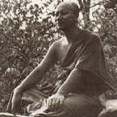

|
 |
Venerable Gavesako (Mitsuo Shibahashi) was born in Japan in 1951. An
experienced mountaineer, he formed part of a team planning to climb
in the Himalayas. Having arrived in India before the rest of his party
in order to acclimatise, he decided to stay at an Indian ashram. By
the time the party arrived, his interest in meditation had eclipsed
his former interest in climbing, and he decided to stay on at the ashram,
spending two years there in all. As it turned out, the climbing party
met with disaster when some of its members were killed in an avalanche. |
|
This is a collection of notes taken during periods of reflection on
working with suffering. They were collected by a lay disciple from Bangkok
who was visiting Venerable Gavesako. Taking suffering as our teacher. DON'T DESPISE SUFFERING; DON'T RUN A WAY FROM IT or be afraid. Suffering warns us not to be complacent. Be wise. Know and see things as they really are; see the truth. If we can bear with it, then the more suffering the better. This way we won't have to be afraid of anything, but we must be patient and persistent. We must be daring. Wherever there is suffering, observe it closely. Suffering needs to be recognised. We must study it and look into it. If we observe like this we will become aware of desire tanha and attachment upadana. Desire and attachment are what cause suffering, and this same desire and attachment blind us to suffering. We suffer but we don't see suffering. So we must make our minds resolute, go right inward in order to see suffering. When we see it we will know it clearly. There will arise ñana-dassana, knowledge and vision according to reality; knowledge that it is only suffering that arises, only suffering that exists, and only suffering that ceases. Other than suffering, nothing arises and nothing ceases. Sabbe dhamma nalam. abhinivesaya: all things are not worthy of clinging to. Sabbe dhamma anatta: all things are not self. Whatever arises must in time cease. If we can leave things be, let suffering go, neither delighting nor despising, there will be no suffering; or if there is, it will be just as if there isn't. Depression is a guest. This feeling of depression has just come for a visit; soon it will leave. Having gone it will come again. If we don't attach to it, it won't stay. So we don't delight in following our moods. When guests come, if we drive them away they'll become angry; but we mustn't be too welcoming either, or they will settle down to stay! Just let them be and they will leave of their own accord. They're only visitors, they are not residents. If they come, we know thus: 'Oh, they've come. ' We note it and then leave them be. We establish our mind in equanimity. Centre your mind, not delighting, not despising, not being frightened; neither taking nor rejecting, just keep knowing. The goal is non-suffering: a mind that is calm, clean and clear. Have you ever experienced so much suffering that you wanted to die? If we're suffering or depressed, we simply know that suffering or depression exists. It' s not necessary for thoughts to proliferate on it. We are patient and observe those feelings not taking delight in them, and not rejecting them either. Holding our mind still, not letting it lean to the right or to the left. Centring our mind. Just knowing. Sitting, just know; walking, just know. If we keep observing we will begin to understand more clearly. We will see that these things in themselves are empty. We will see that both suffering and depression are merely sensations; they are not our self nor do they belong to us. It is only clinging: clinging to the idea that one is depressed, to the idea that one is suffering. Actually those things can change, and they will change of themselves when new sensations arise. They are all aniccam., dukkham., anatta uncertain, unsatisfactory and not-self. We suffer because we cling. We experience suffering and depression only because of clinging and attachment. We must lift our minds to do the work of enquiry using patience and forbearance. If we closely observe the impermanent nature of these feelings, in due course we will see they do change. When we see this, we will know what is meant by sabbe dhamma anatta all things are not-self. Then we will see clearly. Don't think that it' s you that is suffering. Suffering is not you; you are not suffering. Suffering doesn't abide within you, and you do not abide in suffering. Suffering arises, exists and ceases. We have the task of simply knowing that suffering arises, knowing that suffering exists, and knowing that suffering ceases. Regardless of however much suffering there may be, if we can observe in this way we will be able to bear with it; we must endure. A wise person can endure suffering. Dhamma is taking things 50%. If we have thoughts like: 'That person is wrong; they shouldn't have done such a thing;' remember first that we may also be wrong; they may not be wrong at all. Take it only 50%. Considering like this we won't allow our thoughts to cause us to suffer. If someone tells us: 'They've been saying horrible things about you,' or 'Such and such a person is really awful,' don't believe it 1 00% but don't reject it either. Take it only 50%. Don't get caught in reacting and feeling unhappy. They may not have actually said such things; the person relating the stories may just be giving their own version. Don't act on other people' s thoughts. Often we become angry and upset for no reason other than our own thinking. Be mindful and consider carefully before taking action. If you are doing something for your partner and at the same time thinking: 'This is totally unreasonable. Why did they ask me to do such a thing... ?', this is not right. Don't react like that. Don't hold onto such feelings just because it appears unreasonable. They may not have meant what you thought they meant. Thoughts are all aniccam, uncertain; they change. Your partner may change their mind; they may have misinterpreted their own thoughts or have not meant what they said. Don't allow these feelings to confuse you. If we are mindful, we won't suffer. Don't believe anything 100%; not ourselves, not another, not any condition. Don't be upset or frightened. Don't be surprised at anything you hear or see. Remember: everything is uncertain; only take it 50%. If you are still suffering, you must look even closer. Contemplate the Four Noble Truths regularly. If we are still suffering it means we still don't have Right View. When suffering arises, we look inward, not outwards and we don't blame others. We just look at our own body and mind. Look and see how desire and attachment are the cause of suffering. They are Mara; our most bitter enemies. Tackle those thoughts with persistence. Know those thoughts. When we know them for what they are, we will be untroubled. We won't become upset. We will no longer be deceived by these things and won't cling to them. Instead, there will be established the One Who Knows, the Awakened One, the Radiant One. There! That's the Buddha. You don't have to search elsewhere. Even if you have to pay for this with your life, it' s worth it. We must have Right Thought and Right View. Whatever we are doing, we must have mindfulness, clear comprehension, and satisfaction. If we are sweeping the floor, the act of sweeping the floor is the most important thing in the world; anything else is of no importance. When we are sweeping the floor, we know we are sweeping the floor we are mindful of the act of sweeping the floor. We must do it with total satisfaction. If we are squeezing the juice from oranges, the act of squeezing the juice from oranges is the most important thing in the world; anything else is of no importance. When we are squeezing the juice of oranges, we know that we are squeezing the juice of oranges. We are mindful of the act of squeezing the juice of oranges. We must do it with total satisfaction. Whatever it is that we are doing, sweeping the floor, squeezing juice, cleaning the bathroom; this is our practice. We must not think that we do what we do just to please others. Do not think that we have to do it. Do not be worried by what other people might think. We do that which it is our duty to do. And we always do our best. If we look at things this way, if we think in this way, then we won't suffer. We will know peace. We will have great happiness all the time. This is Right Thought and Right View. |
| Home Page |